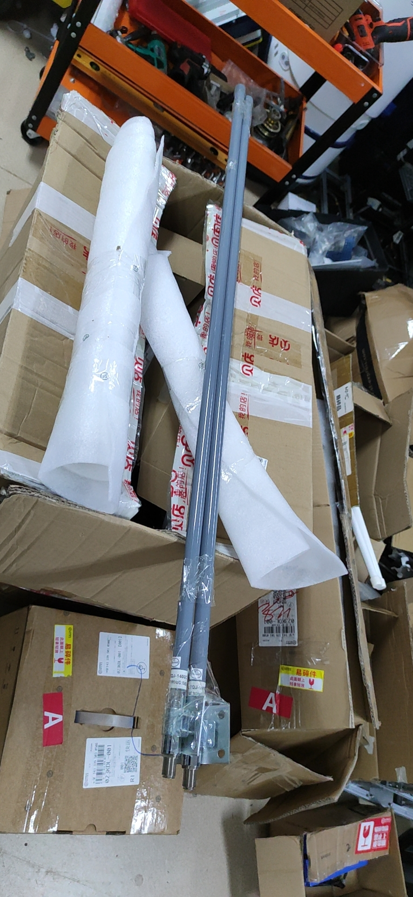

标题标签
VS一般指Microsoft Visual Studio。
微 软
是美国微软公司的开发工具包系列产品。VS是一个基本完整的开发工具集，它包括了整个软件生命周期中所需要的大部分工具，如UML工具、代码管控工具、集成开发环境(IDE)等等。所写...
发展历程 软件组件版本情况 版本发布
8055c0e7f0a298ec9fe408e62f65f00.jpg

163
是美国微软公司的开发工具包系列产品。VS是一个基本完整的开发工具集，它包括了整个软件生命周期中所需要的大部分工具，如UML工具、代码管控工具、集成开发环境(IDE)等等。所写...
发展历程 软件组件版本情况 版本发布
我想喝卡布奇诺